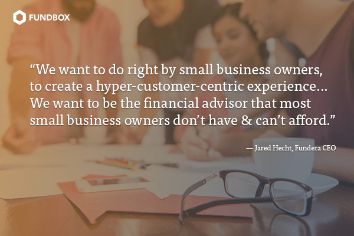

Jared Hecht is on a Mission to Change the Face of Small Business Lending
The State of Small Business Lending: Q&A with Fundera’s CEO
Many entrepreneurs create a mission statement when they start their businesses, but few truly live that mission every day. Jared Hecht does. Hecht is the co-founder and CEO of Fundera, an online marketplace that connects small business owners and entrepreneurs with the country’s leading small business lenders. His mission? “To give small businesses an equal opportunity to achieve financial success.”
When Hecht started Fundera in 2014, his motivation was personal. His cousin couldn’t get funding, even though he already owned a successful business. They turned to Google, Hecht recalls, and couldn’t find the financial information they needed. Fundera was born from the need to educate and simplify the lending process. With Fundera’s free service, business owners can submit one application and can receive competing offers from various lenders willing to provide funding.
As part of our interview series on The State of Small Business Lending, we talked to Hecht about the future of online lending and how he sees Fundera’s role in shaping that industry.
Fundbox: Since you launched Fundera, what have you learned about the type of lending experience small business owners need? How has the platform changed over time to meet those needs?
JH: You have to build a good customer experience. We learn by talking to our customers. You can measure whether you’re providing a good experience to your customers by looking at your growth trajectory over time.
We’ve learned a lot. At the beginning we made assumptions that [small business owners] wanted to talk to someone [an advisor]. But we realized not everyone wanted to [have that conversation]. Small business owners are busy, time strapped, and bombarded with cold calls and spam email. The last thing they want is to have their time wasted.
Time and capital are the scarcest resources small business owners have. And small business owners want a high degree of certainty as quickly as possible in a frictionless way and they want to know the partner they’re working with has their best interests at heart.
Have you had to change the customer experience to meet the needs of millennials?
JH: When we started, the willingness of people to provide their social security or tax ID numbers on a web interface was about 10%. Their ability to connect their bank accounts was about 10%, as well. Now, over 33% will connect their bank accounts and will do it immediately. Is that millennials, or are people just becoming more comfortable with web apps in general?
How does Fundera approach lending differently from others in the industry?
JH: We see the world differently—we have a different philosophy and approach. From day one—before we incorporated the business—we were writing content. It’s one of the pillars (along with providing great technology) that the business is built on. It gives us a competitive edge.
Fundera is also quite active on social media.
JH: We want to be a hub and source of truth and have made a significant investment in social media. We engage [on social platforms]; we answer questions. We try to get ahead of the questions they’re going to ask.
This isn’t your first entrepreneurial endeavor. What did you learn from your experience at your previous company, GroupMe, that you’ve applied at Fundera?
JH: I’ve applied what I didn’t get to experience at GroupMe. At GroupMe, we had a fun product and brand. But we didn’t turn it into a business. We had 20 employees when we sold it—and we weren’t generating any revenue.
This helped me set a personal challenge for myself. I wanted to wanted to steepen my learning curve and create a company that could have a transformative impact on the industry. And I wanted to build a company that played a meaningful part in our employees’ lives and catalyzed their professional growth.
I also learned it’s okay to fail. For every 10 things we released, only three worked. You need to rapidly put things out there and see what sticks. And what works we adapt broadly.

Is company culture important? How do you maintain a positive workplace culture at Fundera’s current growth stage, and as you aggressively build out your team?
JH: I’m willing to admit there’s a lot we don’t know. We’re going to make mistakes—and that’s okay, as long as we course correct quickly.
It’s important to be clear about our vision and mission. And we communicate that to the whole company (about 60 employees) on a regular basis. Our culture is tied into where ultimately we want to go as a company—to have a mission-driven culture.
We want to do right by small business owners. To create a hyper-customer-centric experience. It’s important to write down your values. It’s not my job to tell everyone how to do it, however. I write it down and share [the values] with everyone.
We’re an open book internally, with our people, and externally. We hold monthly town halls; send a weekly email that shares our goals, so people can make informed decisions.
It’s not just about selling products. We want to be the financial advisor that most small business owners don’t have and can’t afford.
Why should small business owners turn to Fundera and not traditional lenders?
JH: If you’re a lender you don’t have objectivity. Your goal is to sell money. We will never be a lender. [Providing] an objective voice helps small business owners understand the financial options out there. That gives us a leg up on lenders.
What do you expect to change over the next few years as you grow?
JH: It’s going to get harder from here on out. And I know I’ll never be fully prepared for it. We don’t know a lot of things, and we need to be humble and learn them. But, we have a great board of directors and advisors, and we hire great people who elevate our game.
Is this the direction the lending industry is shifting? Will millennials cause a shift?
JH: It’s not necessarily millennials. It’s what the internet does to stuff. This is what the internet does to industries. It transfers power from sellers to buyers. It takes opaque industries and makes them transparent.
What are the biggest obstacles for small business owners seeking capital?
JH: Knowledge. Business owners need a keen sense of what they’re looking for and what they’re eligible for—and need to be able to navigate to that solution.
Our biggest competition is the notion of indifference. Will entrepreneurs respond to ads that try to sell them something that’s not right for them, because they don’t have time to learn more? Or because they’re just being reactive?
You say small business owners need more education. What specifically do they need right now to make the right financial decisions?
JH: They need to know what the problem is they’re looking to solve—and within what time frame they need to solve it. They need to think about: What am I eligible for? How do I know I’m getting the right product? Do I have debt? Is it the right kind of debt?
If they’re not eligible, they need to know why and how to fix it. They need to understand creditworthiness. They need a plan so they can get to eligibility.
Where do you see Fintech companies driving new business models that have caught traditional lenders off guard?
JH: At first, traditional banks said, “Oh, that’s interesting.” When customers started going to online lenders, they weren’t necessarily customers of banks. Now, it’s a wake-up call because other companies, such as PayPal are getting into the lending business—and they have the same competitive advantage banks have, including a large base of customers and a very low cost of capital.
Companies like Amazon have access to all the capital in the world. They don’t need to wait for small business owners to come to them. They can proactively go to them.
What’s the ultimate goal?
JH: Like our mission says, we want to build products to help entrepreneurs secure the best financial solutions available…to take the stress out of [their] day-to-day, enabling [them] to grow. Our message to small business owners and entrepreneurs is, “It’s time you got the trusted advisor you’ve always deserved.” What we do is important. We are building a service to empower small business owners.
About Jared Hecht:
Jared Hecht is the CEO of Fundera, a small business lending marketplace that allows small business owners we search for and apply for multiple loan options with a single application. Based in New York City, Fundera has helped connect thousands of small businesses with over $525 million in financing.
Ready for more?
Apply for funding and find out if you qualify today